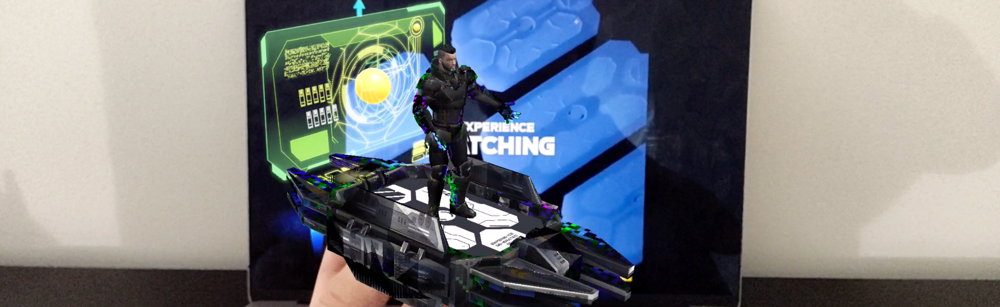
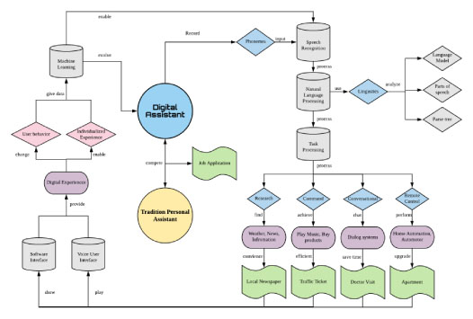
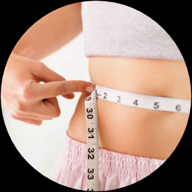
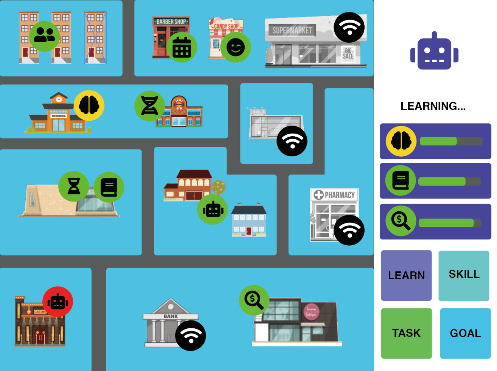

EMERGING TECHNOLOGY I
DIGITAL ASSISTANT
PROJECT DESCRIPTION
Emerging technology is rapidly reshapping our world and human interaction
with robots. Digital assistant powered by artificial itellegent is constanstly
learned about human behaviors and individual preference. Through research
and studies, this project will revel the possibilities of digital assistant as aid in
future senairo.
20191007

RESEARCH & IDEAS
Digital assistant can be divided into either voice control or text input as control.
This map mainly focused on Voice User interface and related technology that used in the process. Lower
right corner illustrated the possible task and senario personal digital assistant application is used
for. By improving the efficiency of informaiton research and ability of electronic controls, digital
assistant can alter user behavior and provides a more convenient individualized experience.
2D
STUDY
DECENTRALIZED DIGITAL ASSISTANT

Digital assistant in the future can play a big role in aiding people to fulfill their task
and goal. According to the research from Pauline E. Johansson, they gave 67 nursing students get access
to personal digital assistant in clinical practice. After 15 weeks of intervention study, the results
shows that PDA (Personal Digital Assistant) was a useful tool to help students learn expanding health
related knowledge, time saving, and contribute to improved patient safety and quality of care. With
current technology, personal assistant can already provides some helps for people to achieve their task
in a more easy and efficient manner. Imagine in the future, under the rapid development speed of
artificial intelligent, what kind of capabilities personal assistant will have and able to do.
Majority of the digital assistant that exist in current market is trained by giant
technology corporations. One of the concerns that raised from this system is personal privacy issue. A
central corporation is constantly collecting verbal, decisional and behavioral information from their
user once they downloaded the application. Everything from the consumers and user side is transparent
and digitalized at corporation’s data base, but the actual usage of the data will only keep inside the
cooperation.

Instead of having corporation to train artificial intelligent, this decentralized
application provides a framework of rapid learning personal assistance, which its user can determined
what kind of skills their PDA should obtain and learn while maintaining all the data privately. The main
interface of the application includes an area map on the left, progress, and functional button on the
right. According to Donella H. Meadows Thinking in Systems, the composition of systems includes three
main parts : Elements, Interconnections, and Functions/Purposes. In this application, each Learn and
Skills will be specific on a single information or area. By having the map of locations (symbolized for
different aspects of task) that user involved, personal digital assistant can better learn the
interrelationship between content. Therefore, while receiving a task that requires multi media or cross
platform ability, digital assistant can draw necessary elements out from the Learn and Skill set.
Finally, the user can even set up short term and long term goal in this application. Clearly
understanding the goal of the user, digital assistant can plan achievable steps and provides useful help
during the process.
3D
STUDY
DIGITAL ASSISTANT NARRATIVE
For 3D study, I continue on developing with the concepts of digital assistant as great
human
personal helper in the future. This time I want to develop a short narrative about digital assistant.
Therefore, I planed to have a augmented reality experience to delivery the content. The background
setting
about this story is: In near future, as the technology development became more advanced, every persons
has
their own personal assistance. The owner has the authority to modify their personal assistant avatar and
skills. At one point, there is a great technology break through, which enable the speed of processing
power
to be faster than the speed of lights. Which means, if the digital assistant got command from their
owner to
travel back in time in digital space, they can. Therefore, this is the first message you (the user) will
receive from the future you through digital assistant.
Making this project, I used EGG key card as an image target to evoke the Augmented Reality experience.
Collaborated with a MFA student Jiaqi, we together brainstorm about the conversation and wrote down the
speech. I later on take the written version of text and used a text-speech generator and give it a
verbal
sound. To make the sound background more digitalized, I edit the voice by adding multiple glitch sound
layers in iMovie then export out as a MP4 file. I downloaded the model and effects from Unity Assets
store
and animated the model to have gesture with Mixamo. In Unity, I used Vuforia augmented reality to turn
the
EGG key card into an image target. I coded to only awake the sound and video play when the image
targeted is
detected. Moreover, in order to have a better experience, when the story begin if the model is not
detected
for couple seconds, the animation and sound will keep playing. Finally, I edit the player setting and
Vuforia setting to make the application split screen, so that player can have the option to put on a VR
cardboard headset.
FUTURE IMPROVEMENT
If I have more time in the future, I want to develop this project further. The current story is
relatively short and unfinished. I want to play with camera and have a more dynamic change of scene.
Moreover, there should be more interactive elements in the project so that the user can feel more
immersive in the story.